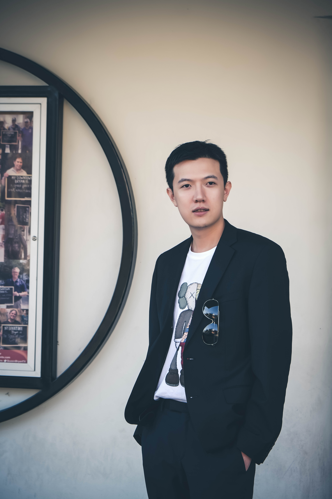

Xing Zhao
- Ph.D. Applied Scientist II at Amazon.
- Computer Science & Engineering Department
- Texas A&M University
- Office: Amazon Doppler
- Email: [zxng] 'at' amazon.com (work), [xingzhao] 'at' tamu.edu (work), [xingzusa] 'at' gmail.com (personal)
- Google Scholar: Here
Howdy! I am an Applied Scientist II in Amazon, working on personalized recommendation and advertisement. Before joining Amazon, I got my Ph.D. degree from the Computer Science & Engineering Department at Texas A&M University, advised by Prof. James Caverlee. My research area is about personalized recommender systems, social media, machine learning, and data mining. Specifically, my research focuses on developing machine learning methods and algorithms for user modeling in social media and recommendation system. My Ph.D. dissertation's topic is Revealing And Addressing Bias In Recommendation Systems.
Previously, I obtained my Bachelor's degree from Computer Science & Engineering Department at Texas A&M University in Spring, 2015.
Publications
- Evolution of Popularity Bias: Empirical Study and Debiasing
paper
KDD 2022 Workshop on Data Science and Artificial Intelligence for Responsible Recommendations (DS4RRS), 2022.
Ziwei Zhu, Yun He, Xing Zhao, James Caverlee - RES: An Interpretable Replicability Estimation System for Research Publications
paper
Association for the Advancement of Artificial Intelligence, (AAAI 2022).
Zhuoer Wang, Qizhang Feng, Mohinish Chatterjee, Xing Zhao, Yezi Liu, Yuening Li, Abhay Kumar Singh, Frank M Shipman, Xia Hu, James Caverlee - Revealing and Addressing Bias in Recommender Systems
paper
Ph.D. Dissertation.
Xing Zhao - Popularity Bias in Dynamic Recommendation
paper
The 27th ACM SIGKDD Conference on Knowledge Discovery and Data Mining, (KDD 2021).
Ziwei Zhu, Yun He, Xing Zhao, James Caverlee - Rabbit Holes and Taste Distortion: Distribution-Aware Recommendation with Evolving Interests
paper
The 32th International Conference on World Wide Web, (WWW 2021).
Xing Zhao, Ziwei Zhu, and James Caverlee - Popularity-Opportunity Bias in Collaborative Filtering.
paper
The ACM Conference Series on Web Search and Data Mining, (WSDM 2021).
Ziwei Zhu, Yun He, Xing Zhao, Yin Zhang, Jianling Wang and James Caverlee - Addressing the Target Customer Distortion Problem in Recommender Systems.
paper
The 31th International Conference on World Wide Web, (WWW 2020).
Xing Zhao, Ziwei Zhu, Majid Alfifi, Jand ames Caverlee - Learning to Hash with Graph Neural Networks for Recommender Systems.
paper
The 31th International Conference on World Wide Web, (WWW 2020).
Qiaoyu Tan, Ninghao Liu, Xing Zhao, Hongxia Yang, Jingren Zhou, and Xia Hu - Improving the Estimation of Tail Ratings in Recommender System. (Acceptance Rate: 15%)
paper
poster
The ACM Conference Series on Web Search and Data Mining, (WSDM 2020).
Xing Zhao, Ziwei Zhu, Yin Zhang, and James Caverlee - Swell Noise Attenuation: A Deep-learning Approach.
paper
site
The Leading Edge 38 (12) 934-942.
Xing Zhao, Ping Lu, Yanyan Zhang, Jianxiong Chen, and Xiaoyang Li - Generative Inpainting Network Applications on Seismic Image Compression and Non-Uniform Sampling.
paper
site
NeurIPS 2019 Workshop Deep Inverse Program Chairs
Xiaoyang Li, Nikolaos Mitsakos, Ping Lu, Xiao Yuan, and Xing Zhao - Attenuating Random Noise in Seismic Data by a Deep Learning Approach.
paper
site
arXiv:1910.12800
Xing Zhao, Ping Lu, Yanyan Zhang, Jianxiong Chen, and Xiaoyang Li - Seismic Compressive Sensing By Generative Inpainting Network: Towards An Optimized Acquisition Survey.
paper
site
The Leading Edge 38 (12) 923-933
Xiaoyang Li, Nikolaos Mitsakos, Ping Lu, Xiao Yuan, and Xing Zhao - TrailMix: An Ensemble Recommender System for Playlist Curation and Continuation.
paper
slide
The ACM Conference Series on Recommender Systems (RecSys) Challenge, 2018. (RecSys Challenge 2018)
Xing Zhao, Qingquan Song, James Caverlee, and Xia Hu - Vitriol on Social Media: Curation and Investigation.
paper
slide
10th International Conference on Social Informatics, (SocInfo 2018), 487-504
Xing Zhao and James Caverlee.
Industry Experience
- Applied Scientist II: Amazon, Jul, 2021 - Present
- Applied Scientist Intern: Amazon Web Service, AI Lab Personalization Team, Project: Beta-discover: A Biases Anaylysis Engine Of SOTA Recommender Systems, May - Aug, 2020
- Data Scientist Intern (Ph.D.): Anadarko Crop., Advanced Analytics and Emerging Technologies Team, Project: Seismic Noise Attenuation by Deep Learning Approaches, May - Aug, 2019
Teaching Experience
- Teaching Assistant: CCSCE 470: Information Storage and Retrieval, TAMU, Spring, 2018
- Teaching Assistant: CSCE 411: Honors Introduction to Program Design and Concepts, TAMU, Fall, 2016
- Teaching Assistant: CSCE 221: Data Structures and Algorithms (Implementation in C++), TAMU, Spring, 2016
- Teaching Assistant: CSCE 411: Design and Analysis of Algorithms, TAMU, Fall, 2015
Projects
- DARPA Systematizing Confidence in Open Research and Evidence (SCORE), May 2020 - July 2021
- RecSys Challenge 2018, TrailMix, 2018
- Collaborate on DARPA NGS2 Project: “filling in the tensor” of large spatial- temporal datasets, HELIOS, 2016 - 2020
Professional Services
- Journal Reviewer: IEEE Internect Systems, Computer Science Journal, Transactions on Knowledge and Data Engineering, IEEE Intelligent Systems, Information Retrieval Journal
- External Reviewer: TheWebConf ('21, '20, '19, '18, '17, '16), WSDM ('21, '20, '19, '18, '17), KDD ('21, '20', '19, '18, '17), AAAI (20, '19, '18), etc.